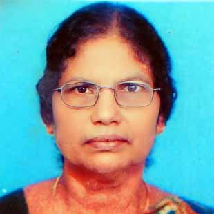

About Me

ഒരു സിംഗിൾ പേരെന്റായി ജീവിതം തുടങ്ങിയപ്പോൾ സമ്പത്തുകൊണ്ടും ജീവിത നിലവാരം കൊണ്ടും ഏറ്റവും താഴ്ന്ന അവസ്ഥയിലായിരുന്നു ഞാൻ. ശരിയായ വസ്ത്രമോ ഭക്ഷണമോ ഇല്ലാതെ ദിവസങ്ങളോളം മൂന്നു പെൺകുഞ്ഞുങ്ങളെയും കൊണ്ട് ജീവിക്കേണ്ടി വന്നിരുന്ന അവസ്ഥയും ഉണ്ടായിട്ടുണ്ട്.
ആ ഒരു അവസ്ഥ എന്നെ അധികം ഭയപ്പെടുത്തിയെങ്കിലും എന്റെ മൂന്ന് മക്കളുടെ സപ്പോർട്ട് എനിക്ക് കൂടുതൽ ധൈര്യത്തോടെ ജീവിക്കാൻ പ്രചോദനമായി. ശരിയായ വിധത്തിലുള്ള വിദ്യാഭ്യാസം പൂർത്തിയാക്കാൻ സാധിക്കാത്തതിൽ വിഷമം നേരിട്ടുവെങ്കിലും വളരെ നന്നായി സംസാരിക്കാനുള്ള കഴിവിനെ കൂടുതൽ മെച്ചപ്പെടുത്താൻ തുടങ്ങി. പല വ്യക്തികളുടെയും ജീവിതാനുഭവങ്ങളെ ചെറിയ ചെറിയ കഥകളാക്കി വീഡിയോ രൂപത്തിൽ പബ്ലിക്കിലേക്ക് നൽകി. ആദ്യം ഒരുപാട് എതിർപ്പുകളും അവഗണനകളും നേരിട്ടുവെങ്കിലും എന്റെ സംസാരിക്കാനുള്ള കഴിവിനെ വീഡിയോ രൂപത്തിൽ ആക്കി പബ്ലിക്കിലേക്ക് കൊടുത്തു കൊണ്ടേയിരുന്നു. ചെറിയ ചെറിയ വേദികളിൽ സംസാരിക്കാൻ കിട്ടിയ അവസരങ്ങൾ എന്നെ കൂടുതൽ ശക്തയാക്കി.
ജീവിതത്തെ പലതവണ മരണത്തെ മുഖാമുഖമായി കണ്ട വ്യക്തിയായിരുന്നു ഞാൻ. ജീവിതത്തിനകത്ത് ഉണ്ടായ ഒരുപാട് സംഭവങ്ങൾ എന്നിൽ ഉണ്ടാക്കിയ മുറിവ് വളരെ ആഴത്തിലുള്ളതായിരുന്നു. അതിന്റെ പരിണിതഫലമായി എന്നിലുണ്ടായ ഡിപ്രഷൻ, ആൻസൈറ്റി, പാനിക് അറ്റാക്ക് എന്നിവയൊക്കെയും എന്റെ ശരീരത്തെയും മനസ്സിനെയും ഒരുപോലെ നശിപ്പിച്ചു കൊണ്ടേയിരുന്നു. കൂടാതെ ഒരു വീഴ്ച കാരണം തലയ്ക്ക് ഉണ്ടായ ക്ഷതം വീണ്ടും കൂടുതൽ ശാരീരിക അസ്വാസ്ഥ്യങ്ങൾക്ക വഴിതെളിച്ചു. ശരീരത്തിന്റെ ചലനശേഷിക്കും കാഴ്ച്ച ശക്തിക്കും സംസാര ശേഷിക്കും സാരമായ പ്രശ്നങ്ങൾ ഉണ്ടായി. ഒരിക്കലും ഒരു സാധാരണ ജീവിതത്തിലേക്ക് തിരിച്ചു വരുമെന്ന് കരുതിയില്ല. എന്നാൽ സാധാരണയിൽ നിന്നും വ്യത്യസ്തമായി ഒരു അസാധാരണ ജീവിതത്തിലേക്ക് കാലെടുത്തുവെക്കാൻ എന്നെ സഹായിച്ചത് ആത്മീയതയുടെ യഥാർത്ഥ സത്യം മനസ്സിലാക്കിയപ്പോഴായിരുന്നു.
അതിനായി എന്നെ സഹായിച്ചത് എന്റെ ഗുരുനാഥനായിരിക്കുന്ന ഫാദർ ഡോക്ടർ മനോജ് കെ ജി ആയിരുന്നു. ഇന്ന് മെഡിക്കൽ സയൻസ് വിശേഷിപ്പിക്കുന്ന മാനസിക തകർച്ചയുടെ ഏറ്റവും മോശമായ അവസ്ഥയിൽ നിന്നും, ആത്മഹത്യയിൽ നിന്നും തിരികെ കയറിവന്നത് ഗുരുനാഥന്റെ ആത്മീയ ശിക്ഷണത്തിനകത്ത് കൂടെയായിരുന്നു. തകർന്ന മനസ്സിനെ വീണ്ടും ഏറ്റവും ശക്തിയുള്ളതായി പുതുക്കിപ്പണിഞ്ഞടുക്കാൻ അദ്ദേഹത്തിന്റെ ആത്മീയ പരിശീലനം വളരെ അധികം എന്നെ സഹായിച്ചു.
എന്നെ ഞാനാക്കിയ കാര്യങ്ങൾ
• എന്റെ ജീവനെയും ജീവിതത്തെയും നിലനിർത്തുന്ന ശരിയായ ആത്മീയ സത്യത്തെ ഞാൻ മുറുകെ പിടിച്ചു
• പ്രപഞ്ചം ഒരുക്കി തന്ന ഗുരുനാഥന്റെ ശിക്ഷണത്തിന് പൂർണ്ണമായും കീഴ്പ്പെട്ടു.
• ഞാനായിരുന്ന അവസ്ഥയെ മറന്നു ഞാൻ എന്നെക്കുറിച്ച് ഏറ്റവും നല്ല സ്വപ്നങ്ങൾ കണ്ടു തുടങ്ങി
• ഞാനല്ലാതെ എന്നെ തകർക്കാൻ മറ്റൊരു ശക്തിക്കോ ഒരു സാഹചര്യത്തിനോ ഒരു വ്യക്തിക്കോ കഴിയില്ല എന്ന് ഞാൻ ഉറപ്പിച്ചു
• ഇല്ലാത്ത കാര്യത്തിനെ കുറിച്ച് വിലപിക്കുന്നതിന് പകരം ഉള്ള കാര്യത്തിൽ ഏറ്റവും അധികം സന്തോഷം കണ്ടെത്തി
• വ്യക്തികൾ കളിയാക്കിയപ്പോഴും കുറ്റം പറഞ്ഞപ്പോഴും എന്റെ കഴിവിൽ ഞാൻ 100% വിശ്വാസമർപ്പിച്ചു
• അടിസ്ഥാനപരമായ ജീവിതസൗകര്യങ്ങൾ ഇല്ലാതെയിരുന്നപ്പോഴും അതിനെക്കുറിച്ച് ഓർത്ത് വിഷമിക്കുവാനോ പരിഭവം പറയാനോ അവസരം നൽകിയില്ല
• ഓരോ തോൽവിയിൽ നിന്നും പുതിയ പുതിയ പാഠങ്ങൾ പഠിച്ചെടുക്കാൻ തുടങ്ങി
• വ്യക്തികളോടുള്ള പകയും സാഹചര്യങ്ങളോടുള്ള പൊരുത്തക്കേടും മറന്നു ലക്ഷ്യത്തിലേക്ക് മാത്രം ശ്രദ്ധ വെച്ചു
• ഞാൻ ആരായി തീരണം എന്തായി തീരണം എന്നുള്ള വ്യക്തത ഞാൻ എന്നിലേക്ക് കൊണ്ടുവന്നു
• എപ്പോഴും എല്ലാ കാര്യങ്ങൾക്കും നന്ദി പറഞ്ഞുകൊണ്ടേയിരുന്നു
My Family
My father M Dayanandan and Mother C Palamma.

My children are Mishma Kamal Mahal, Anishma Kamal Mahal and Mahima Kamal Mahal.
ഞങ്ങളുടെ അമ്മയെക്കുറിച്ചു രണ്ട് വാക്ക്...
ഞാൻ കണ്ടതിൽ വെച്ച് ഏറ്റവും സ്ട്രോങ്ങ് ആയിട്ട് ഉള്ള വ്യക്തി ആരാ എന്ന് ചോദിച്ചാൽ..... ഞാൻ ആദ്യം പറയുന്നത് എന്റെ അമ്മയുടെ പേര് തന്നെയായിരിക്കും.... കാരണം വേറെ ഒന്നുമല്ല 17 വയസിൽ ആണ് അമ്മയുടെ കല്യാണം.ഒരു കുടുംബജീവിതം എങ്ങനെ കൊണ്ടുപോകണം എന്ന് പോലും അറിയാത്ത പ്രായം...
ആ പ്രായത്തിൽ തന്നെ ഒരു കുടുബജീവിതത്തിൽ കാൽ എടുത്തു വെച്ച് ജീവിക്കാൻ തുടങ്ങി... കൂടെ ഞങ്ങൾ മൂന്നു പേരും... ആ ജീവിതത്തിന്റെ ഓരോ ഘട്ടവും നല്ല രീതിയിൽ പ്രയാസം ഉള്ളതായിരിന്നു. ഒരു ഘട്ടത്തിൽ ജീവിതം തീർത്താൽ മതി എന്നുള്ള തീരുമാനം വരെ എത്തി നിന്നു...
എന്നാൽ ജീവിതത്തിൽ ഒരിക്കൽപോലും തോറ്റു കൊടുക്കില്ല എന്നുള്ള ഉറപ്പിൽ നിന്ന് അമ്മ ഞങ്ങളെ മൂന്നു പേരെയും കൊണ്ട് പുതിയൊരു ജീവിതം ആരംഭിച്ചു..... ആ ആരംഭത്തിൽ നിന്നായിരുന്നു.. അമ്മയുടെ ജീവിതം തിളക്കമേറിയ തായത്, കൂടെ ഞങ്ങളുടെയും ...
ശരിക്കുമുള്ള ജീവിതം എങ്ങനെ മുന്നോട്ടു കൊണ്ടുപോകാം എന്നുള്ള പാഠം ഞങ്ങൾ ആദ്യം പഠിച്ചത് ഞങ്ങളുടെ അമ്മയുടെ അടുത്തു നിന്നാണ്..... ജീവിതത്തിൽ ഒത്തിരി പ്രശ്നമുണ്ടായിട്ടും അതിൽ നിന്നൊക്കെ അതിജീവിച്ച് ഇപ്പോൾ ജീവിതം വളരെയധികം വിജയത്തിലും സന്തോഷത്തിലും എത്തിനിൽക്കുന്നു...
നമുക്ക് തന്നിരിക്കുന്ന ഓരോ ജീവിതവും വെറുതെ ജീവിച്ചും പഠിച്ചും തീർക്കുന്നതിൽ ഒരു അർത്ഥവുമില്ല.. പകരം ഈ ലോകത്തിൽ ഓരോ ജീവനും തന്നിരിക്കുന്ന പർപ്പസ് അത് തിരിച്ചറിഞ്ഞ് ജീവിക്കുന്നതാണ് ഏറ്റവും വലിയ ജീവിതവിജയം. അത് മറ്റുള്ളവരിലും പകരണം എന്നാണ് അമ്മ ഞങ്ങളെ പഠിപ്പിച്ചിട്ടുള്ളത്...
ഇപ്പോൾ ഞങ്ങൾവളരെ അധികം സന്തോഷത്തിൽ ജീവിക്കുന്നു.
എനിക്ക് ഓർമ വെച്ച നിമിഷമം മുതൽ ഞാൻ കണ്ടു വളർന്നത് എന്റെ അമ്മേടെ ജീവിതം ആണ്... ഓരോ സാഹചര്യം വരുമ്പോഴും അതിനെയെല്ലാം എങ്ങനെ നേരിടണം എന്നത് അമ്മ പറഞ്ഞതല്ല അമ്മയുടെ ജീവിതത്തിൽ നിന്നാണ് ഞാൻ കണ്ടു പഠിച്ചത്...
അമ്മയുടെയും നമ്മുടെയും ഏറ്റവും മോശമായ ഘട്ടത്തിൽ ആണ് അമ്മ നമ്മളെ മൂന്ന് പേരെയും കൊണ്ട് പുതിയൊരു ജീവിത രീതിയിൽ കടക്കുന്നത്... അന്ന് ഞാൻ കുഞ്ഞായിരുന്നെങ്കിലും അമ്മയുടെ ഓരോ നിലപാടും നമ്മേടെ ഉയർച്ചക്കാണെന്ന് എനിക്ക് ഉറപ്പ് ഉണ്ടായിരുന്നു...
ഒരു ഘട്ടത്തിൽ അമ്മക് വന്ന ഒരു വീഴ്ച നമ്മളെ മൊത്തത്തിൽ തളർത്തിയിരുന്നു... അവിടെ ഒക്കെ നിന്ന് ഒരുപാട് മോശമായിട്ടുള്ള ഒരു നീണ്ട ഘട്ടത്തിൽ നിന്ന് എല്ലാ മോശമായ സാഹചര്യത്തെയും മറികടന്നു...
ഇന്ന് ഈ നിലയിൽ ഒരുപാട് വ്യക്തികൾക്ക് ഒരു വെളിച്ചമായി നിൽക്കുന്നതു കാണുമ്പോൾ അഭിമാനമാണ്....അതുപോലെ നമ്മളെ മൂന്ന് പേരെയും ഇന്ന് നമ്മൾ നിൽക്കുന്ന നല്ല നിലയിൽ എത്തിച്ചതും അമ്മ കാരണമാണ്...
ഈ കാലഘട്ടത്തിൽ രക്ഷകർത്തകൾ ആഗ്രഹിക്കുന്നത് കുട്ടികൾ പഠിച്ചു വിജയിക്കണം എന്നതാണ് പക്ഷെ അമ്മ നമ്മളെ പഠിപ്പിച്ചത് വിദ്യാഭ്യാസത്തിൽ തോൽക്കരുത് എന്നല്ല ജീവിതത്തിൽ തോൽക്കരുത് എന്നാണ്....അമ്മ ഒരിക്കലും അമ്മക്കും നമുക്കും വേണ്ടി മാത്രമല്ല ജീവിക്കുന്നത് ഇരുൾ നിറഞ്ഞ ജീവിതത്തിൽ കിടക്കുന്ന വ്യക്തികളെ തിരിച്ചു പിടിക്കാൻ കൂടെയാണ് അതിനുവേണ്ടിയുള്ള ഓരോ ചുവടു വെപ്പ് അമ്മ മുനോട്ട് വെയ്ക്കുന്നുമുണ്ട് അത് നിവർത്തിക്കുന്നുമുണ്ട്...
എന്റെ പതിനേഴു വയസിൽ ഞാൻ അമ്മയുടെ കുടെ സ്കൂളിൽ ട്രെയിനിങ് കൊടുത്തു തുടങ്ങി ഇപ്പോൾ ഒരുപാട് സ്കൂളിൽ ഞാൻ അമ്മയുടെ കുടെ നിന്ന് ട്രെയിനിങ് കൊടുക്കുന്നു... അങ്ങനെ എനിക്ക് കൊടുക്കാൻ സാധിക്കുന്നു എങ്കിൽ അത് അമ്മ കാരണമാണ് അമ്മയുടെ ജീവിതം കൊണ്ട് ഓരോ കാര്യങ്ങളും പഠിപ്പിച്ചത് കൊണ്ട് ആണ്...
Hello, I'm Mahima Kamal Mahal, the youngest daughter of Kala Kamal Mahal.
Let me tell you about my mom and the situation she went through. Ever since I could remember, I have been seeing a lot of suffering and problems in her life, and also how patiently she solves the same.
She is the one who helped me to set my goals and dreams. As her daughter, I can definitely say one thing: she's completely different from other parents. She's never tried to inject her dreams into three of us. For our dreams and talent, she's so supportive, more than any other parents.
Even though she had faced a lot of challenges and pain, she never showed it to us. As a single parent, she's completely taken responsibility for our livelihood, education, and other personal needs.
And from her life, we, three of us, learned a lot of life lessons as well. In her career I have never seen that she's giving up. She's very serious about achieving her dreams and goals in her career. She always put all her cent percentage potential into what she decided to do for the same.
Even though she got insulted by her own family, relatives, and society, she still crossed all her barriers and is now living as a successful mother, daughter, and a great mentor to many as well. She's the best woman I have ever seen in my life so far.
Specialisation